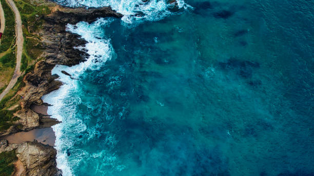

Seas Page!
This page will talk about the Seas and their main issue!
Seas all across the world hold some of the most beautiful and mysterious creatures this planet
has to offer! ranging from the lovable dolphin to the creepy anglerfish, no matter what they are
they're all incredile in their own right!


However with humans processing larger amounts of waste that we careless throw away wherever we
happen to be, a lot of this ends up being tossed into the sea that drifts along endless. Due to
most waste being plastic it takes decades perhaps even longer to see plastic begen to decay
which of course, sees these unnatural objects affect the seas they so happen to be in.
This waste ends up harming not only the wild life living within the seas but also the plant life
growing underneath the waves. Some waste processes these harmful chemicals into the water which
goes into the lungs of whatever it comes into contact with, making these creatures very ill. Waste
can also get itself stuck on creatures that are trying to swim by, causing a great deal of discomfort
for these animals and long-term health issues cause of it.
Luckily there's a solution to help limit and hopefully eventually get rid of this waste problem
for good! that being preventing waste from being dumped into the seas, while the current waste
that has already been tossed into the sea to be picked up and placed properly where it should've been.
GAIA has been aidding not only big projects to help remove large piles of waste found deep in the sea,
but also more local events that pick up waste found on their shores! we hope with out involvement
alongside spreading the general awareness of these problems, the government will take more action
towards how waste is properly taken care off.